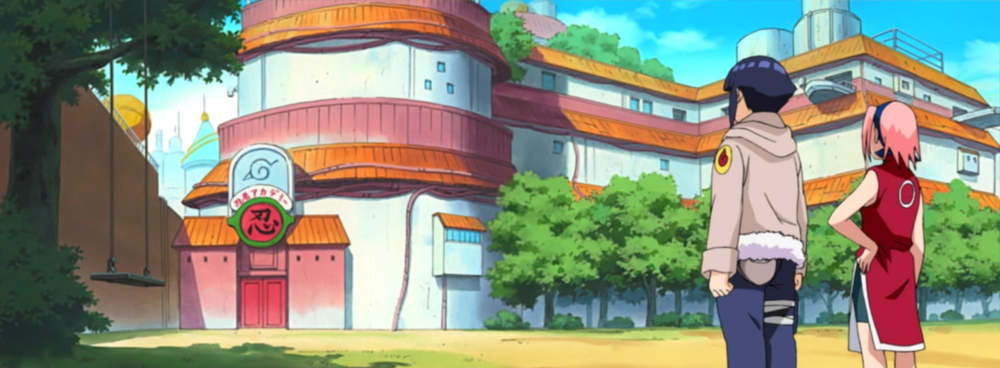
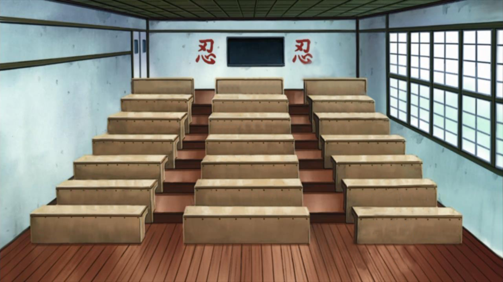

L'Academie des Ninja
L'Académie (忍者学校, Akademî, Signifiant littéralement : École Ninja) est le centre de formation de Konoha pour les futurs ninjas. Elle fut fondée par Tobirama Senju, le Nidaime Hokage. Une fois leur diplôme en poche, les apprentis ninjas peuvent devenir genins.
Les salles de classe, dans l'académie sont grandes et ont de hauts plafonds, basées sur une théorie que les plus grandes salles de classe menaient à un enseignement large, en expansion, même au tableau lui-même. Devant le tableau noir se trouve un podium, situé loin des bureaux des élèves et mis dans une position où l'enseignant peut surveiller tout le monde à la fois. Les conditions d'admission à l'Académie de Konoha sont d'aimer le village et d'être dans l'espoir d'aider et de préserver la paix et la prospérité. Avoir un esprit qui ne cédera pas, capable de supporter la formation et le travail dur. Être en bonne santé dans l'esprit et le corps. Si les conditions ci-dessus sont remplies, l'admission à l'Académie est accordée.
À part les leçons évidentes qu'on attend d'une Académie Ninja, tous les élèves reçoivent des connaissances essentielles, telles que savoir lire et écrire et sont aussi enseignées les mathématiques, les sciences, la géographie, etc. Sakura Haruno et Ino Yamanaka suivirent également des cours ninjas spéciaux, où elles apprirent des choses sur les autres cultures et comment la connaissance des choses comme l'arrangement de fleurs les aideraient à se fondre dans l'environnement lors d'une mission d'infiltration. Les étudiants doivent aussi étudier les règles Shinobis. Des cours spéciaux donnés par des Shinobis très expérimentés sont parfois tenus.
Enseignés par des instructeurs chûnins, tous les ninjas potentiels sont formés sur les tactiques et stratégies. On leur enseigne aussi bien les rudiments de l'élaboration de pièges que dans le renforcement physique et spirituel.
Elles sont apprises par la manipulation d'armes ninjas et d'outils, comme les shurikens et les kunaïs, et l'apprentissage du lancer et à s'exercer sur cible. Les étudiants de l'Académie sont également formés au sujet du chakra et comment l'utiliser, les signes de mains et les niveaux de base du :
👉🏽 Taijutsu : les cours servent d'équivalent à l'Académie Ninja de cours d'éducation physique. En cours de Taijutsu, les élèves participent à des activités physiques pour aider à former leur corps et à développer leur endurance.
👉🏽 Ninjutsu : les cours fournissent l'essentiel de ce que les ninjas potentiels apprennent à l'Académie. Le sujet du Ninjutsu englobe les techniques qui utilisent du chakra et permet à l'utilisateur de faire quelque chose que ce qu'il serait autrement incapable de faire. Des techniques telles que la technique de métamorphose et de la Technique de Clonage sont enseignées aux élèves de l'Académie qui les prépareront à ce qu'ils apprendront de leurs Jônin-senseis.
👉🏽 Genjutsu : les cours ne sont pas donnés, sauf bien sûr pour expliquer ce qu'est le Genjutsu. Lors de l'apprentissage du Genjutsu, les étudiants sont invités à déterminer s'ils sont piégés dans un Genjutsu, et puis la façon de se libérer.